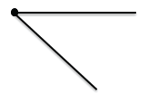
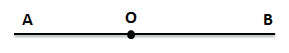
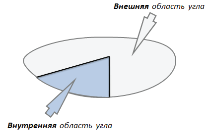

Точка, которая лежит на прямой, разделяет прямую на две части, каждая из которых называется лучом, исходящим из этой точки, а саму точку называют началом каждого из лучей.
Например:
Точка О разбивает прямую АВ на две части (влево от точки О и вправо от точки О)
Части, на которые точка О разбивает прямую АВ, выделены цветом
Каждая из этих частей является лучом, а точка О является началом одного и другого луча
Угол — геометрическая фигура, которая состоит из точки и двух лучей, исходящих из этой точки. Эти лучи называют сторонами угла, а их общее начало — вершиной угла.

Угол называется развернутым, если обе его стороны лежат на одной прямой.

Любой угол разделяет плоскость на две части. Если угол не развернутый, то одна часть называется внутренней, а другая внешненй областью этого угла.

Если угол развернутый, то любую из двух частей, на которую он делит плоскость, можно считать внутренней областью луча.